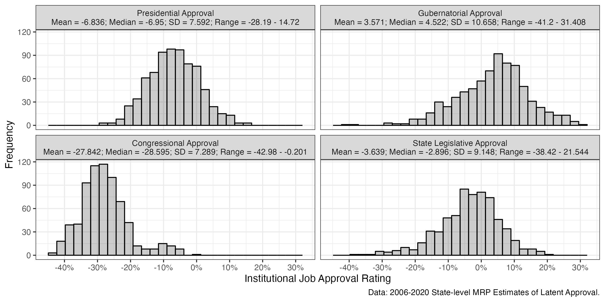
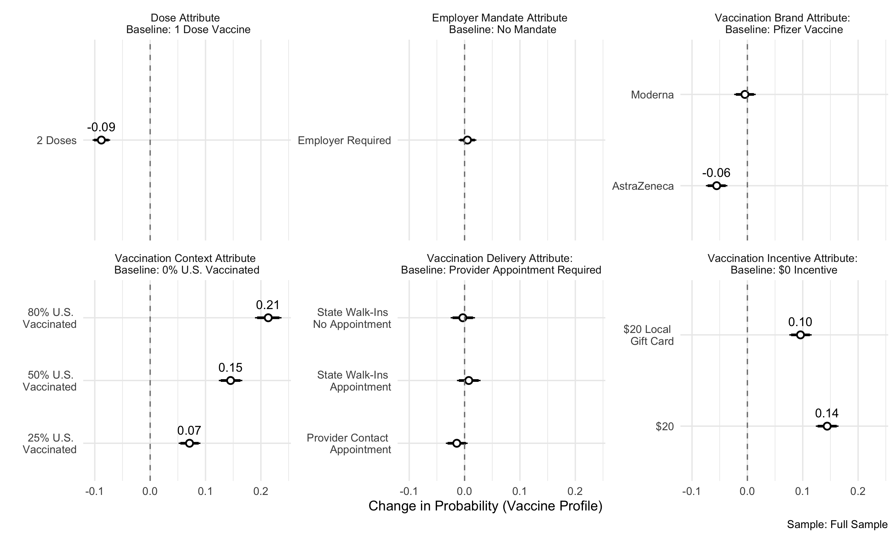
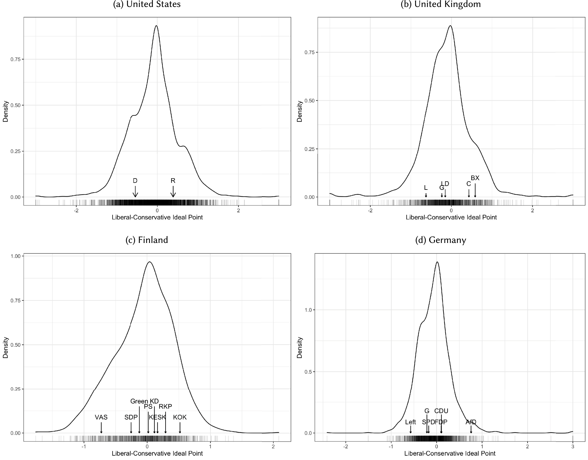

Peer-Reviewed Publications

Publication Link \(\star\)Manuscript Data Materials
Abstract: Theories of collective accountability in American elections center on the ability, and willingness, of voters to hold legislators accountable for the job performance of the president and his party in Congress. While this work finds that legislators pay an electoral penalty for low institutional approval ratings under their party’s control, little is known whether this form of collective accountability translates to the state legislative context. We argue that collective accountability in state legislative elections follows a two-tiered approach, with state legislators being held accountable for national and state policymaking institutions. Using new state-level measures of institutional approval for national and state institutions, along with voter-level data from the 2007-2020 Cooperative Election Study, we find that presidential approval is the principal growing motivator of state legislative partisan choice with other policymaking institutions playing a minimal role, at best. These findings suggest that the electoral fortune of state legislative candidates, and state parties, are largely and increasingly determined by national forces outside of the purview of state-level policymaking institutions.

Publication Link \(\star\)Manuscript Data Materials
Abstract: The increase in elite-level polarization and changing partisan nature of elections to the U.S. House led scholars to posit that candidate characteristics are minor considerations in determining these election outcomes. However, it is not clear if these trends extend to the U.S. Senate or if candidate considerations have lost the relatively minor predictive power they exhibited during the 2010s, particularly as partisanship continued to rise as a predictor of election outcomes. Using historical data on elections to the U.S. House and Senate from 1900 to the recent 2022 midterm elections, we test whether the incumbency advantage and candidate quality differentials are still salient predictors of congressional elections. We find that the incumbency advantage largely disappeared as a salient component of election outcomes for both chambers as partisanship increasingly shapes these outcomes. By contrast, we find that candidate quality differentials, while waning, still can play a considerable role in shaping congressional election outcomes, particularly in the Senate. We conclude by showing that the declining emergence of quality candidates may have played a pivotal role during the 2022 election cycle by costing Republicans control of the U.S. Senate.
Publication Link \(\star\)Manuscript Data Materials
Abstract: Theories of collective accountability in American elections center on the ability, and willingness, of voters to hold legislators accountable for the job performance of the president and his party in Congress. While this work finds that legislators pay an electoral penalty for low institutional approval ratings under their party’s control, little is known whether this form of collective accountability translates to the state legislative context. We argue that collective accountability in state legislative elections follows a two-tiered approach, with state legislators being held accountable for national and state policymaking institutions. Using new state-level measures of institutional approval for national and state institutions, along with voter-level data from the 2007-2020 Cooperative Election Study, we find that presidential approval is the principal growing motivator of state legislative partisan choice with other policymaking institutions playing a minimal role, at best. These findings suggest that the electoral fortune of state legislative candidates, and state parties, are largely and increasingly determined by national forces outside of the purview of state-level policymaking institutions.
Publication Link \(\star\)Manuscript Data Materials
Abstract: While the literature largely agrees that candidates are electorally punished for political scandals, it is unclear whether citizens differentiate between varying types of scandals, limiting our collective understanding of whether certain types of scandals are more salient in the eyes of citizens. To overcome this gap, we argue that citizens not only differentiate between types of scandals, but they also perceive sexual harassment to be a far worse scandal than other types of scandals, such as plagiarism and corruption. Using a conjoint experiment to simultaneously estimate the effect of differing scandals on candidate evaluations in the United Kingdom, we find strong evidence that involvement in sexual harassment scandals lowers candidate support to a greater degree than other types of scandals and is conditional while voters and candidates are both male. These results suggest that citizens do strategically punish candidates for the substance of their scandals rather than the mere presence of scandal.
Publication Link \(\star\)Manuscript Data Materials
Abstract: Members and congressional parties go to great lengths to signal bipartisanship to voters, believing they will be electorally rewarded for cooperating with the other party. However, the House majority party also has an incentive to enact its preferred, party-oriented policy program and obtaining minority party support requires legislative compromise. We theorize that electorally strong majority parties are relatively unconcerned about their public support, and are thus more willing to pass partisan bills. When the majority party’s public support is tenuous, it moderates bills to receive minority support and reap electoral benefits from bipartisanship. Using time-series data of public opinion polling and measures of bipartisanship in Congress, we find support for this claim. We also find that salient bills increase the strength of the relationship between majority party electoral standing and bill extremity. Finally, our results demonstrate the extent to which the majority party is electorally risk averse; proximity to an election does not change the relationship between electoral standing and bipartisanship on passage. Our results speak to the ability of the majority party to set the level of bipartisanship within the House and the inherent trade-off between dramatic policy change and public support.
Publication Link \(\star\)Manuscript Data Materials
Abstract: While there is considerable research on the role racial attitudes play in shaping white political preferences, relatively little is known about how racial attitudes influence white participation in democratic politics. We present a model examining the relationship between racial attitudes and political participation in the 2016, 2018, and 2020 U.S. national elections. Using a variety of measures of political participation, our analysis presents a clear finding: the direction of the relationship between latent conservative racial attitudes and political participation is asymmetrical among partisan sub-groups, with conservative racial attitudes motivating participation among white Republicans and, to a greater degree, depressing participation among white Democrats. This finding has stark implications for how racialized appeals are likely to be deployed in an era of increasing affective partisan polarization.

Publication Link \(\star\)Manuscript Data Materials
Abstract: Context: As COVID-19 vaccines were rolled out in early 2011, governments at all levels in the US faced significant difficulty in consistently and efficiently administering injections in the face of vaccination resistance among a public increasingly political polarized on vaccination preferences prior to the beginning of the mass vaccinations. Methods: Using an original conjoint experiment fielded to a nationally representative sample prior to the mass proliferation of COVID-19 vaccines, we examine how different incentives (e.g., employer mandates, state-organized or health care provider–organized vaccination clinics, or financial incentives) affect the public’s preference to get vaccinated. We also test how financial incentive preferences correlate with self-reported vaccination intention using observational data from the Kaiser Family Foundation June 2021 Health Tracking Poll. Findings: We find financial incentives positively influence vaccine preferences among the mass public and all partisan groups, including Republicans initially “unlikely” to be vaccinated. Using the observational data, we replicate our experimental findings showing positive financial incentive attitudes positively correlate with self-reported vaccination disclosures.Conclusions: Our results provide support for direct financial incentives, rather than other incentives, as being a valuable tool for policymakers tasked with alleviating vaccination resistance among a US mass public increasingly polarized along partisan lines.

Publication Link \(\star\)Manuscript Data Materials
Abstract: A growing literature studies the relationship between ideological and affective polarization. By taking a Downsian approach to affective polarization we contribute to this literature and demonstrating that affective polarization is driven by congruence between citizens and their party, relative to other parties, in the general liberal-conservative space and across a host of salient issue domains. We find robust support for our theory using individual-level national election survey data from the United States, United Kingdom, Germany, and Finland. Moreover, we find that ideological differences inform affective polarization independently from partisan identifications and that they drive more out-party animosity than in-party affinity. These findings have implications towards a more unified understanding of the citizen determinants of affective polarization and the role ideology plays in shaping the views held by partisans across democracies.
Publication Link \(\star\)Manuscript Data Materials
Abstract: From the onset of the first confirmed case of COVID-19 in January 2020 to Election Day in November, the United States experienced over 9,400,000 cases and 232,000 deaths. This crisis largely defined the campaign between former Vice President Joe Biden and President Donald Trump, centering on the Trump administration’s efforts in mitigating the number of cases and deaths. While conventional wisdom suggested that Trump and his party would lose support due to the severity of COVID-19 across the country, such an effect is hotly debated empirically and theoretically. In this research, we evaluate the extent to which the severity of the COVID-19 pandemic influenced support for President Trump in the 2020 election. Across differing modeling strategies and a variety of data sources, we find evidence that President Trump gained support in counties with higher COVID-19 deaths. We provide an explanation for this finding by showing that voters concerned about the economic impacts of pandemic-related restrictions on activity were more likely to support Trump and that local COVID-19 severity was predictive of these economic concerns. While COVID-19 likely contributed to Trump’s loss in 2020, our analysis demonstrates that he gained support among voters in localities worst affected by the pandemic.
Publication Link \(\star\)Manuscript Data Materials
Abstract: Vaccines are the most effective means at combating sickness and death caused by COVID-19. Yet, there are significant populations within the United States who are vaccine-hesitant, some due to ideological or pseudo-scientific motivations, others due to significant perceived and real costs from vaccination. Given this vaccine hesitancy, twenty state governors from May 12th to July 21st 2021 implemented some form of vaccination lottery aiming to increase low vaccination rates. In the aftermath of these programs, however, the critical question of whether these lotteries had a direct effect on vaccination remains. Previous literature on financial incentives for public health behaviors is consistent: Financial incentives significantly increase incentivized behaviors. Yet, work done specifically on state vaccine lotteries is both limited in scope and mixed in its conclusions. To help fill this gap in the literature, we use synthetic control methods to analyze all 20 states and causally identify, for eighteen states, the effects of their lotteries on both first-dose and complete vaccination rates. Within those eighteen states, we find strong evidence that all but three states’ lotteries had positive effects on first-dose vaccination. We find for complete vaccinations, however, over half the states analyzed had negative or null effects. We explore possibilities related to these mixed results including the states’ overall partisanship, vaccine hesitancy, and the size of their lotteries finding null effects for each of these explanations. Therefore, we conclude that the design of these programs is likely to blame: Every state lottery only incentivized first-doses with no additional or contingent incentive based on a second dose. Our findings suggest that the design of financial incentives is critical to their success, or failure, but generally, these programs can induce an uptake in vaccination across diverse demographic, ideological, and geographic contexts in the United States.
Publication Link \(\star\)Manuscript Data Materials
Abstract: Fenno (1975) famously posited that the mass public’s assessments of the U.S. Congress are rooted in a paradox, with citizens holding negative evaluations of the collective Congress while holding favorable views of their individual members of Congress. Since the conceptualization of Fenno’s Paradox, the Congress underwent pronounced changes due to increased ideological polarization between increasingly homogeneous parties comprised of more partisan loyal, ideologically extreme, legislators. In this paper, we ask whether this partisan polarization shifted the public’s assessments of the Congress and their individual representatives over time. Leveraging over 45 years of new data measuring the monthly approval of Congress and legislators with a fully specified model, we find that greater polarization lowers the approval rating of both over time, suggesting that greater polarization weakens Fenno’s Paradox by considerably lowering legislator approval. We explore the underlying mechanism of this finding at the individual-level, finding that co-partisan support for Congress and opposing-partisan support for legislators collapses since 1980. Taken together, our results suggest that partisan polarization plays a large role in motivating the historic decline in congressional approval and the ability of legislators to amass a personal incumbency advantage.

Publication Link \(\star\)Manuscript Data Materials
Abstract: Recent work on American presidential elections posits that voters engage in anticipatory balancing. Anticipatory balancing predicts voters who prefer divided government will split their ticket in order to moderate collective policy outcomes by forcing agreement among institutions controlled by opposing parties. We test this theory within the case of the 2021 Georgia U.S. Senate runoffs, which solely determined whether Democrats would have unified control of the federal government by determining majority control of the Senate given preceding November victories by President-elect Biden and House Democrats. Leveraging an original survey of Georgia voters, we find no evidence of balancing within the general electorate and among partisans across differing model specifications. We confirm this lack of balancing in qualitative content analysis of voter electoral runoff intentions. We reconcile this lack of evidence for balancing to original analysis showing the unprecedented partisan nature of contemporary Senate elections since direct-election began in 1914.
Publication Link \(\star\)Manuscript Replication Materials
Abstract: The dramatic Democratic victories in the 2021 Georgia U.S. Senate runoffs handed Democrats their first majority since 2015 and, with this, unified Democratic control of Washington for the first time since 2011. While Democratic Leaders and President Joe Biden crafted their agenda, any hope of policy passage rested on complete unity in a 50-50 Senate and a narrow majority in the U.S. House. Against this backdrop, the 117\(^\text{th}\) Senate is the most polarized since direct-election began in 1914 and, by popular accounts, the least deliberative in a generation. In this article, we examine the implications of partisan polarization for policymaking in the U.S. Senate throughout the direct-election era. First, we show that greater polarization coincides with more partisan Senate election outcomes, congruent with recent trends in the House. Today, over 90% of Senators represent states carried by their party’s presidential nominee. Secondly, we show that polarization coincides with higher levels of observable obstruction, conflict, partisan unity, and narrower majorities. Lastly, we show that this polarization coincides with lower levels of deliberation in the form of consideration of floor amendments and committee meetings. Taken together, we paint a picture of a polarized Senate that is more partisan, more obstructionist, and less deliberative.
Publication Link \(\star\)Manuscript Replication Materials
Abstract: Scholars argue that contemporary American elections are pronounced in their degree of partisanship and nationalization. While much of this work largely uncovers a heightened degree of nationalization in contemporary elections, little is known about how far back these patterns generalize. Given the limited availability of American electoral data, this work also generally focuses on a single office or during a certain segment of the post-war period since 1946. Moreover, this work largely focuses on states as salient units of analysis, masking potential variation found in U.S. counties, the smallest geographical unit constituting panel observations over time and across elections. In this note, we leverage a novel dataset of county-level election returns for President, U.S. Senate, and Governor, to specify a model assessing whether American elections are more nationalized and partisan than during any other period since the Civil War. We find evidence that presidential and Senate elections are more partisan today than any period since the Civil War, while gubernatorial elections are as partisan today as they were during the late 1800s. Our findings have implications for contemporary-based theories explaining the rise of partisanship in American elections and demonstrates the utility of county-level data in assessing electoral changes in America.
Publication Link \(\star\)Manuscript Replication Materials
Abstract: Pundits and academics across disciplines note that the human toll brought forth by the novel coronavirus (COVID-19) pandemic in the United States (U.S.) is fundamentally unequal for communities of color. Standing literature on public health posits that one of the chief predictors of racial disparity in health outcomes is a lack of institutional trust among minority communities. Furthermore, in our own county-level analysis from the U.S., we find that counties with higher percentages of Black and Hispanic residents have had vastly higher cumulative deaths from COVID-19. In light of this standing literature and our own analysis, it is critical to better understand how to mitigate or prevent these unequal outcomes for any future pandemic or public health emergency. Therefore, we assess the claim that raising institutional trust, primarily scientific trust, is key to mitigating these racial inequities. Leveraging a new, pre-pandemic measure of scientific trust, we find that trust in science, unlike trust in politicians or the media, significantly raises support for COVID-19 social distancing policies across racial lines. Our findings suggest that increasing scientific trust is essential to garnering support for public health policies that lessen the severity of the current, and potentially a future, pandemic.
Publication Link \(\star\)Manuscript Replication Materials
Abstract: Do citizens weigh the ideological nature of collective representation provided by Congress when assessing the job performance of their national legislature? While recent aggregate-level work suggests that congressional approval rises when Congress responds to the ideological preferences of the mass public, individual-level models posit that approval is a function of partisanship or valence considerations, with little consideration for policy. I fill this disconnect between two lines of research by presenting a model arguing that citizens weigh the ideological representation provided by their Congress in the face of two contrasting options of collective ideological representation in the responsible party government era. Using cross-sectional and panel survey data which allow for scaling citizens and the congressional parties in the same ideological space, I find that majority co-partisans and citizens closer in ideological proximity to the governing majority are more likely to approve of Congress. I also find that this the relationship between ideological proximity and approval is independent of partisanship. These findings have implications for the capacity of citizens to assess the collective representation of the chief policy-making institution of their national government.

Publication Link \(\star\)Manuscript Data Materials
Abstract: The traditional view among scholars is that voters do not weigh congressional job performance in their congressional voting decisions. Recent work challenges this notion and provides evidence that congressional job approval matters at the ballot box. However, scholars are divided as to which party benefits from positive job approval ratings. Moreover, the literature is unclear regarding the conditions under which voters hold individual candidates accountable for the collective performance of Congress. Analyzing individual and aggregate level data, this study produces several key findings: (1) assessments of congressional job performance are directly tied to the electoral standing of the majority party; (2) positive approval ratings raise the level of support for majority party candidates among minority partisans and those closest to the minority in ideological proximity; (3) majority party incumbents gain more from congressional approval than non-incumbents and suffer less of a loss from congressional disapproval; (4) the impact of congressional approval on majority party fortunes is conditioned by how cohesive the majority party is. These findings provide a clearer narrative of how collective accountability works in congressional elections and the incentives for majority and minority party behavior in the contemporary Congress.
Abstract: Theoretical and empirical models of congressional voting assumes that legislators vote with the sole purpose to move policy closer to their ideologically ideal point, with the most prominent being the NOMINATE model. While NOMINATE correctly classifies the vast majority of votes cast by members of Congress, a significant number of votes are misclassified and coded as spatial error. The literature on congressional voting assumes this error to be random and idiosyncratic across members. We dispute this conventional notion and argue that spatial error in congressional is not random, but rather systematic across members. We present a theory positing that spatial error is more likely on roll-call votes tackling salient policy issues and among members representing districts with greater ideological divergence between the median voter and the member’s primary election constituency. Using Aldrich-McKelvey scaling to place legislators and constituencies in the same ideological common space, we find support for our theory. We attribute this finding to the greater electoral uncertainty faced by ideological moderates and members representing districts with greater ideological divergence between key constituencies. Our findings have implications for the NOMINATE model, the nature of spatial error in legislative voting, and the electoral cross-pressures faced by legislators.

Abstract: With the onset of the 2020 COVID-19 pandemic in the United States, state governments and the federal administration were forced to craft social distancing recommendations advising the general public on how they could combat the transmission of the deadly virus. These recommendations, and sometimes orders, advised against many daily social activities such as visiting family members, restaurant dining, and sporting event attendance. Adherence to and support of these measures has been varied, with many flouting mask and group-gathering recommendations/orders. This has reduced the effectiveness of these measures and lead to virus resurgences across the U.S. In this research note, we examine the role scientific knowledge and gender play in influencing citizens’ comfort and risk perceptions regarding social distancing recommendations and orders. In both the general population and within parties, we find that women with high scientific knowledge are much less comfortable breaking social distancing guidelines than their male counterparts and women with lower scientific knowledge. These findings shed light on how both knowledge and gender interact to drive (non)compliance with government policies during a public health crisis in an increasingly polarized America.

Abstract: While scholars have found that Trump was able to capitalize on the racial attitudes of white voters, it is less clear how these racial attitudes influence vote-choice across partisan and ideological cleavages in the electorate. It is also unclear whether racial attitudes affected voting at the congressional level or electoral outcomes at the aggregate level. Using a novel measure of racial attitudes at the subnational level and survey data, we make three clear findings: (1) Trump and Republican congressional candidates benefited from racial attitudes both at the aggregate level and among white voters, (2) this electoral benefit for Republicans persisted during the 2018 midterm elections, and (3) the effect of attitudes on vote-choice did not significantly vary across partisan and ideological cleavages in the white electorate. Our findings suggest that, even during the era of highly nationalized and partisan elections, racial attitudes are still a mechanism by which Republicans can win significant electoral support among Democrats and relatively liberal voters in the white electorate. These findings have implications for the growing salience of race in the Republican electoral coalition.

Abstract: With the onset of the 2020 COVID-19 pandemic in the United States, many state and local governments were forced to implement necessary policies to contain transmission of the deadly virus. These policies ranged from closing most businesses to more controversial proposals, such as postponing primary elections. In this research note, we examine the role scientific knowledge and gender played in citizen perceptions of these virus containment policies both in the general population and among partisans. We find that while a gender gap persists in scientific knowledge, both in the general population and within the parties, women are generally more likely to use this knowledge to inform their policy views on necessary government action during the COVID-19 pandemic. These findings shed light on how knowledge and gender intersect to drive support for government intervention during the time of a severe public health crisis in a partisan America.

Abstract: Barabási (2014) argues that a significant proportion of nodes can be randomly removed from any scale-free network without it breaking apart. Gao, Barzel and Barabási (2016) suggest that three additional properties of networks, density, heterogeneity and symmetry, facilitate their ability to adjust their activities to retain functionality in times of stress. Barnett and Jiang (2016) examined the World Wide Web and found that while there are changes in the use of individual websites in this scale-free network due to weekly cycles in viewing specific websites, extreme events as well as other social and cultural events, the overall network is remarkably stable. This paper suggests an additional property, the structural equivalence of nodes that facilitates network stability. Further, it differentiates between two forms of equivalence, synchronous or structural equivalence, and diachronic equivalence, which indicates that two nodes’ position in a network change over time in a similar manner. A subset of the World Wide Web, the international news network is examined to demonstrate these notions. Daily data on the use of the world’s 44 most frequently visited news websites by 118 countries were mined over the 17 month period September 1, 2015 to January 30, 2017, to create a longitudinal two-mode network (countries and websites). The results suggest that individual structurally and diachronic equivalent nodes may be removed from both the international and website networks without impacting how the network changes over time.
Effect of Incumbency on Vote Share by Seat Type &
Polarization Level, 1920-2016

Abstract: Recent work finds that a decline in the incumbency advantage coincides with the rise of partisanship as a determinant of congressional electoral outcomes. While this work updates our view of congressional elections, it is unclear if this holds in the more candidate-centered and high-information electoral context of the U.S. Senate. In this paper, I address these two considerations by evaluating a theory positing that polarization conditions the influence of incumbency and partisanship as Senate election determinants. Using data on the entire direct-election Senate era and survey data, this paper finds that: (1) polarization provides a partisan advantage for candidates running in states in which they are members of the partisan majority and (2) polarization positively conditions the incumbency advantage for Senators representing states that favor the other party. These findings suggest that Senators may still successfully cultivate a personal brand in the face of growing ideological differences between the parties.
Abstract: While the use of racial appeals by the 2016 Trump campaign is indisputable, researchers are actively debating their precise role in influencing voter behavior in the election. We seek to expand upon existing research which finds that racial animus electorally benefited the Trump campaign. We examine to what extent those benefits redounded to GOP candidates down-ballot and whether racial animus distorted ideological proximity voting in the 2016 election. We find that racial animus among voters helped Republicans at multiple ballot levels and that higher levels of racial animus distorted correct proximity voting among voters ideologically closest to the Democratic candidate. Our findings suggest that high salience campaign appeals on race at the presidential level can influence elections for the House and Senate. We also provide evidence that the process of racial partisan realignment is incomplete, as some white voters still vote incongruously with their ideology due to racial animus.
Interactive Effect of Obstruction & Partisan Majority on
Senator Voteshares

Abstract: Are Senators cross-pressured by party
influence and constituent demands on procedural votes? We present a
theory positing that Senators are indeed cross-pressured between these
two demands and that they anticipate an electoral cost for their
procedural voting record. In an analysis of Senate procedural votes
since the 92nd Congress, we find that procedural votes are salient to
voters and important to party leaders. Using a new spatial measure of
obstruction preference, we demonstrate our finding three ways. First,
obstruction preferences have become more polarized as the Senate
experiences more intense legislative obstruction. Second, electorally
vulnerable members are most likely to break from their party on
procedural votes. Third, we find that voters electorally reward majority
party Senators that break from their party and behave like minority
party obstructionists. Our findings suggest that, unlike the House,
Senate procedural votes are largely indistinguishable from substantive
votes and are electorally salient.